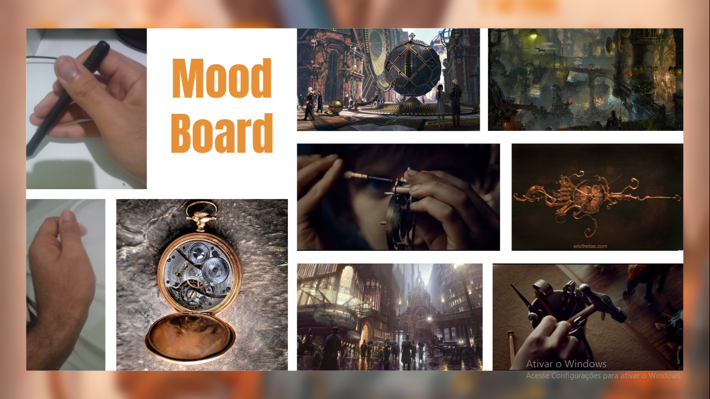
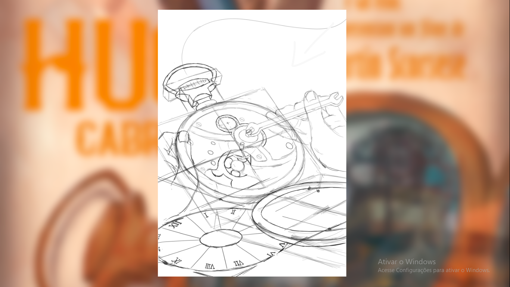
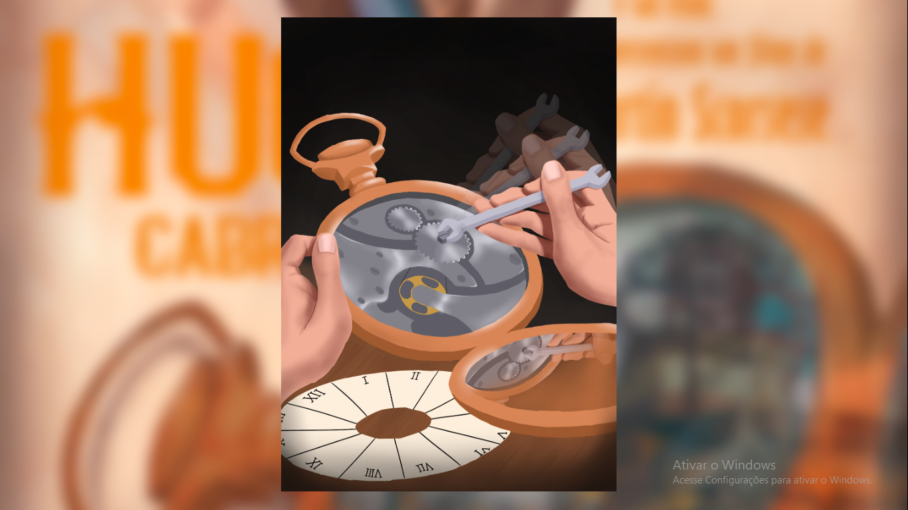
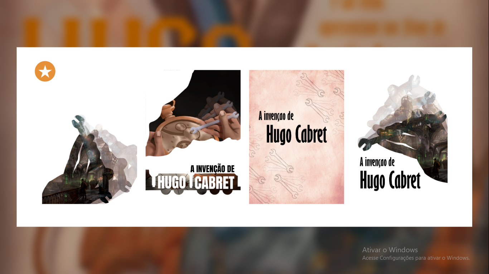
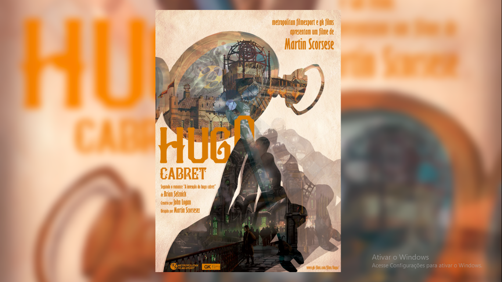
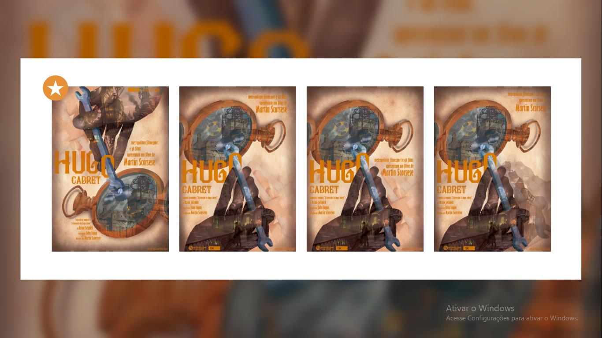
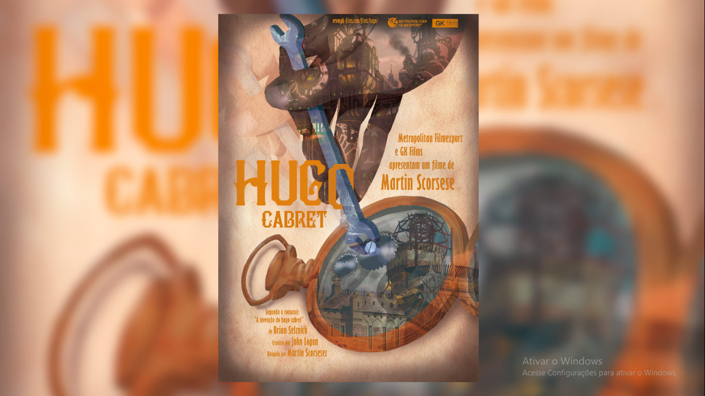

Hugo Cabret
Processo inicial:
O projeto consiste em produzir um cartaz para o filme Hugo Cabret que transpareça uma ação, no entanto para isso precisei antes fazer uma analise do filme, para assim escolher uma ação/movimento que representasse o filme por inteiro.
Depois de assistir o filme duas vezes e fazer um resumo do proprio, cheguei a conclusão que a ação mais representativa desse filme era claramente: [Consertar], ja que não necessariamente essa palavra se encaixa no pé da letra que acontece no filme, isso quer dizer, não representa só as maquinas, relogios e bugigangas sendo consertadas, mas também, uma serie de vidas e relações, até carreira, sendo reparadas ao longo da narrativa.
Após a escolha era necessario fazer a conceituação da ação, dessa maneira facilitaria o processo de representação da mesma:
Conceituação da Ação:
- Participantes:
- Agente: Quem conserta
- Paciente: Quem é Consertado
- Objeto: “Ferramenta” para consertar ( Não necessário )
- Trajetória: Extremamente variada, mas na maioria de vai e vem.
- Velocidade: Insignificante
- Frequência: Normalmente repetitiva
- Movimento: Altamente relativo (as vezes simples, as vezes compostos)
- Causa: Algo está quebrado
- Consequência: Algo consertado
Em seguida criei uma nuvem conceitual baseado na coceituação e nos apestcos do filme, essa etapa vai me ajudar muito na hora de indentificar se o cartaz passa a mensagem que eu desejo.
Nuvem Conceitual:
Velho - Mecânico - Pobre - Meticuloso
Engrenagem - Metálico - Relógio
Maquinário - Escuro - Sujo - Habilidoso
Faltava ainda mais uma coisa pra eu começar a produzir, então iniciei a produção do mood board, contendo refrencias, telas do filmes e ppinturas digitais de outros conteudos.
Mood Board:
Em seguida eu ja tinha material suficiente para começar a produzir realmente, então começei é claro pela representação da ação, pois eu precisava fazer teste com usuarios pra ter o feedback, se realmente eles conseguiam ver a ação [Consertar] representada no cartaz.
Rascunho:
Em seguida como tenho experiencia com pintura digital finalizei o rascunho e ja estava pronto para realizar todos os testes necessários
Pintura digital:
Depois de finalizado fui em buscar de usuario em potencial para realizar os teste de representação dos 18 entrevistados, todos reconheceram a ação perfeitamente, 4 pessoas disseram o nome do filme quando perguntado que filme lembrava quando eles viam o cartaz assim. Os teste foram um sucesso!
Mesmo os teste sendo um sucesso o cartaz estava muito simples e precisava de algo mais inovador, sendo assim fui fazer algumas experimentações e teste, abrindo o leque de opções e assim no final escolher o melhor e o que mais se adequaria para o cartaz final.
Primeiro grupo de experimentações:
A partir dessas quatro versões do cartaz foi escolhida uma para prosseguir e então começei a trabalhar na mesma, usando processos de mutiplicação, sobreposição, luz direta entre outros para criar um tipo de mascara que passasse duas informações ao mesmo tempo, e também ja adicionar a tipografia e afins.
Primeira vesão finalizada:
Gostei muito do resultado e os testes feito em seguinte só reforçaram que eu estava no caminho certo mas ainda faltava certos refinamentos por isso elaborei mais quatro versões seguindo dessa
Segundo grupo de experimentações:
Depois de escolhida so foi preciso fazer alguns ajustes mininos e feito mais testes pra enfim definir a versão final. Como os teste foram um sucesso novamente não foi preciso mais nenhuma alteração
Versão final:
Foi elaborado uma amosta no CAC - Centro de Artes e Comunicação da UFPE - Universade Federal de Pernambuco onde esse cartaz me rendeu um boa nota e varios elogios...